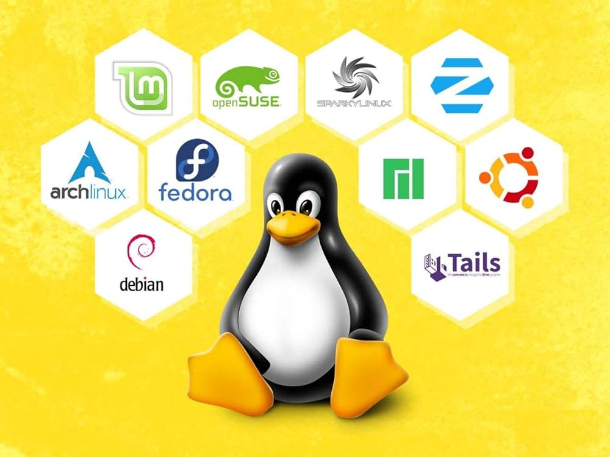

Installing Linux Mint on a Host System
This guide provides a comprehensive walkthrough for installing Linux Mint on your computer. Follow each step carefully to ensure a successful installation.
1. Download Linux Mint
- Visit the Linux Mint download page.
- Select the edition you prefer (Cinnamon, MATE, or Xfce).
- Choose a download mirror close to your location and download the ISO file.
- After downloading, verify the integrity of the ISO by comparing its SHA256 checksum with the one provided on the website.
2. Create Bootable Media
To install Linux Mint, you'll need to create a bootable USB drive or DVD.
- For USB:
- Use tools like Rufus (Windows) or the
ddcommand (Linux) to create a bootable USB stick. - Ensure the USB drive has at least 4GB of storage and back up any important data before proceeding, as this process will erase the drive.
- Use tools like Rufus (Windows) or the
- For DVD:
- Use a DVD burning tool to write the ISO file to a blank DVD.
3. Prepare for Installation
- Backup important data from your current system.
- Ensure your computer is connected to a reliable power source.
- Access the BIOS/UEFI settings:
- Restart your computer and press the designated key (often
F2,F10,F12, orDel) to enter BIOS/UEFI. - Disable Secure Boot if enabled.
- Set the boot order to prioritize USB or DVD, depending on your installation media.
- Restart your computer and press the designated key (often
4. Boot from Installation Media
- Insert the bootable USB or DVD into your computer.
- Restart the system.
- Your computer should boot into the Linux Mint live environment. If it doesn't, revisit the BIOS/UEFI settings to ensure the boot order is correctly configured.
5. Start the Installation
- In the live environment, double-click the "Install Linux Mint" icon on the desktop to launch the installer.
6. Select Installation Preferences
- Language: Choose your preferred language and click "Continue".
- Keyboard Layout: Select the appropriate keyboard layout and click "Continue".
- Updates and Other Software:
- It's recommended to connect to the internet at this stage to download updates and third-party software during installation.
- Check the boxes for "Install third-party software for graphics and Wi-Fi hardware, Flash, MP3 and other media formats" if desired, then click "Continue".
7. Installation Type
- Erase disk and install Linux Mint: This option will delete all data on the selected drive and install Linux Mint. Use this if you don't need to keep existing data.
- Encrypt the new Linux Mint installation for security: Choose this if you want to encrypt your entire system for added security. You'll need to enter a security key during boot.
- Use LVM with the new Linux Mint installation: Logical Volume Management allows for flexible disk management.
- Something else: For advanced users who want to create custom partitions or dual-boot with another operating system.
After selecting the desired option, click "Install Now".
8. Configure Time Zone
- Select your geographical location on the map to set the correct time zone and click "Continue".
9. Create User Account
- Enter your name, computer name, username, and a strong password.
- Choose whether to log in automatically or require a password at login.
- Click "Continue" to proceed.
10. Complete the Installation
- The installer will copy files and configure the system. This process may take some time.
- Once completed, a prompt will appear asking you to restart the computer. Click "Restart Now".
- Remove the installation media when prompted and press "Enter".
11. Post-Installation Steps
- Update the System:
- After logging in, open the Update Manager.
- Click "Refresh" to check for updates.Install any available updates to ensure your system is up-to-date.
- Install Additional Drivers:
- Go to the "Driver Manager" (found in the menu under "Administration").
- The system will automatically detect and display any proprietary drivers for your hardware, such as graphics or Wi-Fi drivers.
- Select the recommended drivers and click "Apply Changes".
- Set Up Backup:
- Use the built-in "Timeshift" utility to create a system snapshot. This is helpful in case you need to restore your system to a previous state.
- Ensure your data is regularly backed up to an external device or cloud service.
12. Customize Your Linux Mint System
- Change the Desktop Environment: If you're using the Cinnamon desktop, you can tweak various settings by navigating to "System Settings" and choosing "Themes". You can install new themes to personalize the look of your system.
- Install Essential Software:
- Use the "Software Manager" or "Synaptic Package Manager" to install software like Firefox, LibreOffice, GIMP, or VLC.
- Alternatively, you can use the command line to install packages using
sudo apt install package-name.
- Configure System Preferences: Go to "System Settings" to configure hardware, language, date and time, display, and power settings to suit your preferences.
13. Troubleshooting Common Issues
- No Wi-Fi Connection:
- If your Wi-Fi doesn't work out of the box, try installing proprietary drivers using "Driver Manager".
- If that doesn't work, try restarting your router or resetting your network settings.
- Slow System Performance:
- Make sure your system is up-to-date and that no background processes are consuming too many resources.
- Use the "System Monitor" to check for any processes that are using excessive CPU or memory.
- If you have too many startup applications, you can disable unnecessary ones in "Startup Applications" found in "System Settings".
- Graphics Issues:
- Check if your graphics drivers are up-to-date by opening the "Driver Manager".
- If you are using an older graphics card, you might need to install legacy drivers or use open-source alternatives.
14. Uninstalling Linux Mint (Optional)
- If you decide to remove Linux Mint and revert to your previous operating system, you can do so by
following these steps:
- Boot into your previous operating system (e.g., Windows).
- Use a disk partition tool (like GParted or Disk Management in Windows) to delete the Linux Mint partition.
- If you were using GRUB (Linux Mint's bootloader), you may need to repair the bootloader using a Windows recovery disk or other tools.
Note: Always ensure you have backups of important data before attempting to install or
remove operating systems. Mistakes can result in data loss.